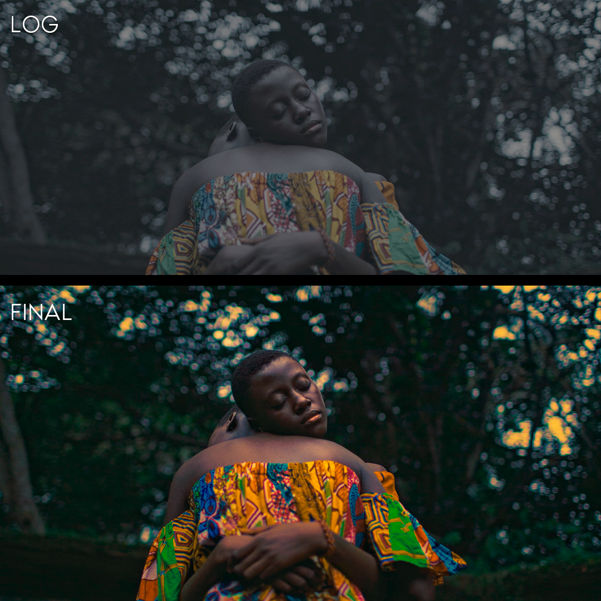
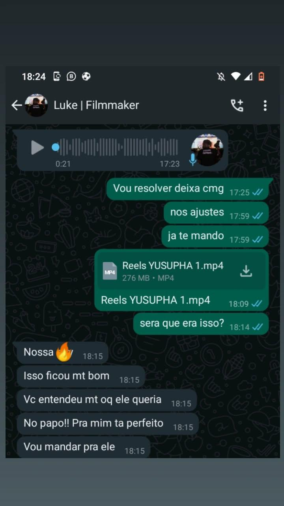
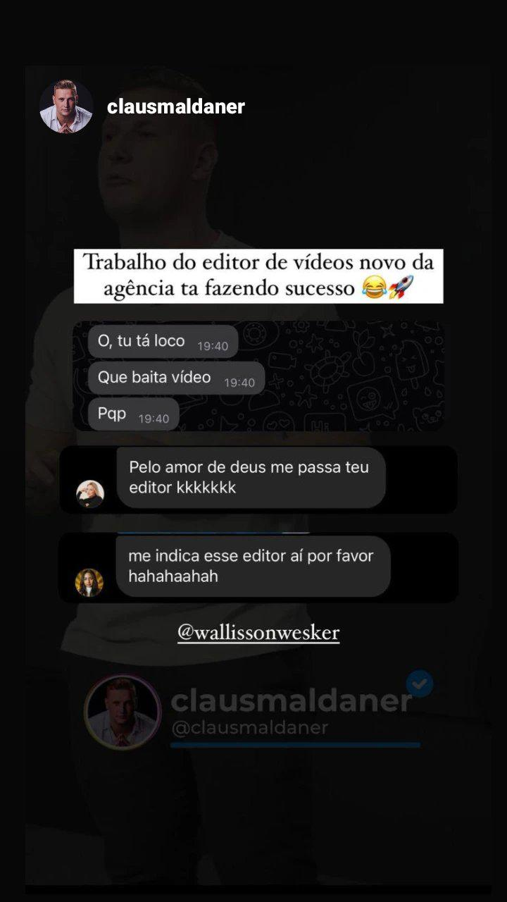
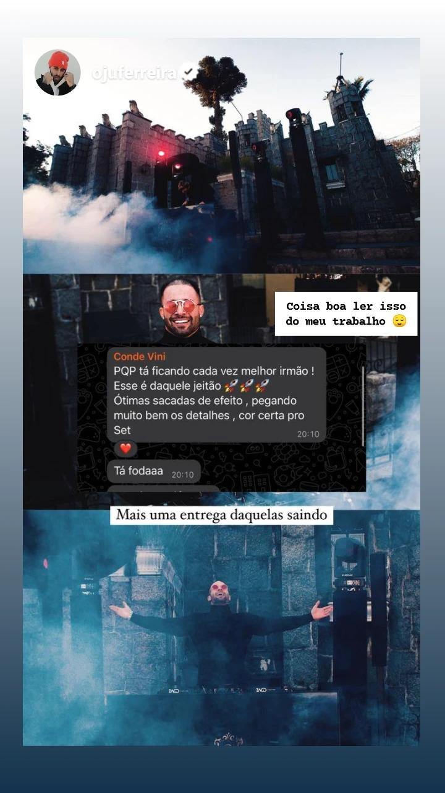

Portfolio
Colorgrading
-

Description for Colorgrading 1
-

Description for Colorgrading 1
Projetos
Services
- Produção de Vídeo
Produção de vídeo de alta qualidade adaptada às suas necessidades. - Edição
Edição de vídeo especializada para resultados profissionais e refinados. - Mentoria
Orientação para tornar seus projetos visuais um sucesso.
Feedbacks
-

"Cliente satisfeito com o capricho, carinho e dedicação do projeto."
-

"Feedback do projeto que fiz pro Influencer Claus Maldaner."
-

"Comentario do Conde Vini sobre a entrega desse projeto maravilhoso."
Contato
Sinta-se à vontade para entrar em contato para dúvidas ou colaborações:
Email: wallissonwesker@gmail.com
WhatsApp: 41 9814-0279